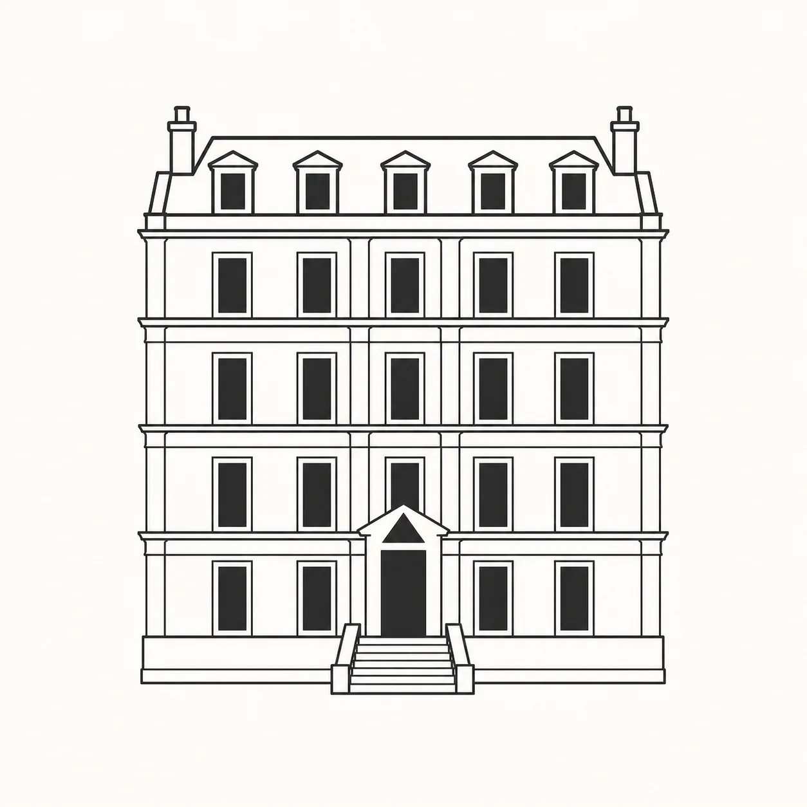
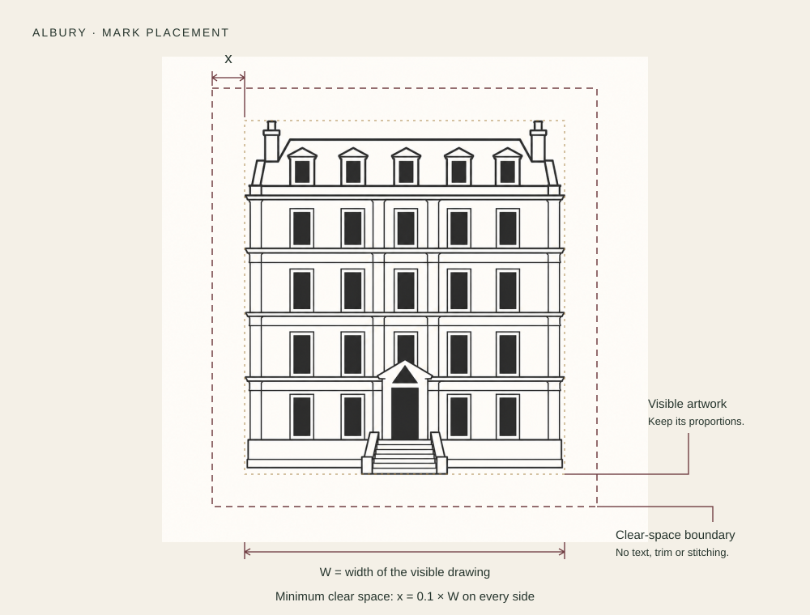
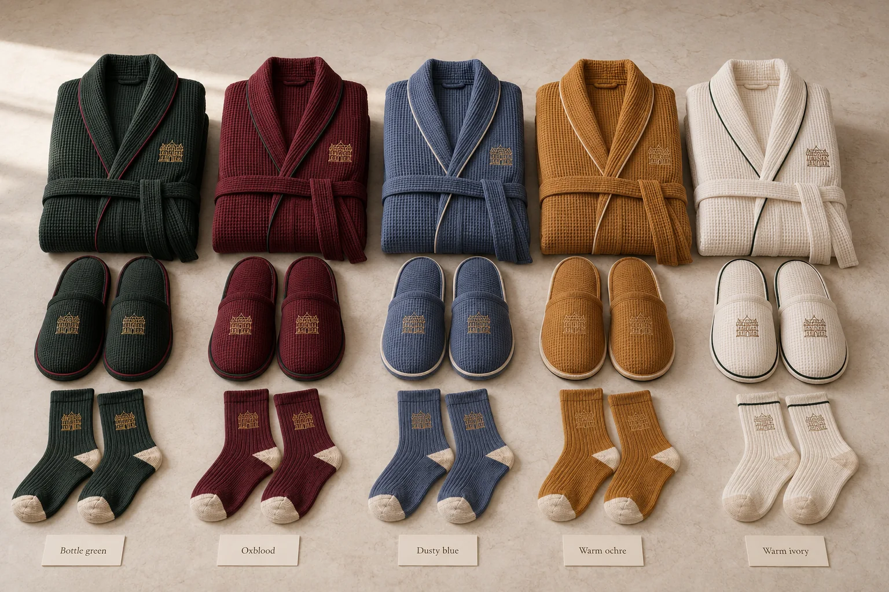

{kind=link}
Use the whole drawing
Keep the roof, chimneys, windows and steps together. Scale proportionally and leave the architecture upright.
Colour, character
and a sense of home.
Albury’s identity begins with the house itself. Its architectural drawing appears on the things people touch and use: a notebook, a coffee cup, a robe, a jar from the kitchen.
Meet the house mark ↓
Deep colour, warm paper, a little gold. One or two colours lead an arrangement; the others give it depth.
Select a swatch to copy its colour code.
These HEX values are screen references set for this guide. Cloth, glaze, leather, embroidery and metallic foil are matched through physical samples; a flat gold colour does not reproduce a metallic finish.
The complete architectural drawing is the identifying device. It stands on its own, with “Albury” used separately where a name is useful.

Let W be the width of the visible drawing. Keep at least 0.1 × W clear on all sides, measured from the outermost steps, roof and chimneys.
On a 40 mm-wide mark, that means 4 mm of clear space. Measure from the drawing itself, rather than the white margin around the image file.
Start at 30 mm wide for print, 40 mm for embroidery and 140 px on screen. Proof at the actual size and increase it if windows or fine lines begin to close up.
Starting sizes depend on the material and process. Confirm legibility on an actual production sample.
Download the placement diagram ↓Keep the roof, chimneys, windows and steps together. Scale proportionally and leave the architecture upright.
Choose a small, deliberate position: a chest, ankle, cover, cup face or label head. The surface and its texture should still lead.
Do not substitute an AW monogram, crown, crest or another façade. Avoid stretching, cropping, outlines added around the mark, shadows and gradients.
Download the existing mark reference (PNG). This is the current raster reference; a supplier needs a faithful vector or stitch file prepared from it for production.
The same objects and the same care, selected to suit the room and occasion.

Bottle green, oxblood, dusty blue and warm ochre become the material grounds. Ivory interiors, paper and fine trims keep the objects clear and useful.
Roughly 75–90% of the visible custom surface stays warm white or ivory. Colour becomes a rim, piping, woven line, spine, handle wrap or small panel.
The inventory and the guest’s welcome stay the same. Colour expresses a setting or a preference; it does not rank the guest.
The identity should feel as good as it looks.
A ceramic candle, a familiar detail, a fresh boxed example to take home.

Bergamot
Black tea
Cedar
Vetiver
Bright citrus opening into dry tea and warm wood, with a quiet earthy finish. The intended impression is clean and lived-in, with little sweetness.
Fragrance brief · proposed. The final composition and production specification remain to be confirmed.
Keep scent discreet, with unscented provision available for a guest who prefers it. At the dining table, let the food and wine set the aroma.
The mark connects the house line. Placement and material change with the object.


The house mark sits on the bag, box and selected objects. A personal note explains the welcome. The summer-party pack uses bottle green, gold detail, black handles and ivory tissue.
Guest gifts & hampers →Pantry jars and food preparations use charcoal and muted gold, the architectural mark and Rafael Bellocq’s name. Cocktail cherries remain in this family. Syrups and cordials have their own consistent bottle and Albury label.
The pantry collection →Short, round-shouldered clear glass; a gold screw cap; warm ivory paper and bottle-green serif ALBURY. A clear product name and fine green rules complete the front. No chef’s name or architectural mark. Vanilla syrup, all five core cordials and the seasonal cordials use this same family in the pantry, at the bar and as gifts.
See the bottle family →Limestone Springs still and sparkling water keep their blue labels and distinct producer emblems. Hatfield and other bought-in goods keep their own packaging; the house mark belongs on Albury’s surrounding service pieces.
Drinks & service →The mark identifies both working household objects and gifts. Personal stationery and issued provisions can be kept; a marked room object is not automatically a souvenir.
What guests keep →{kind=link}